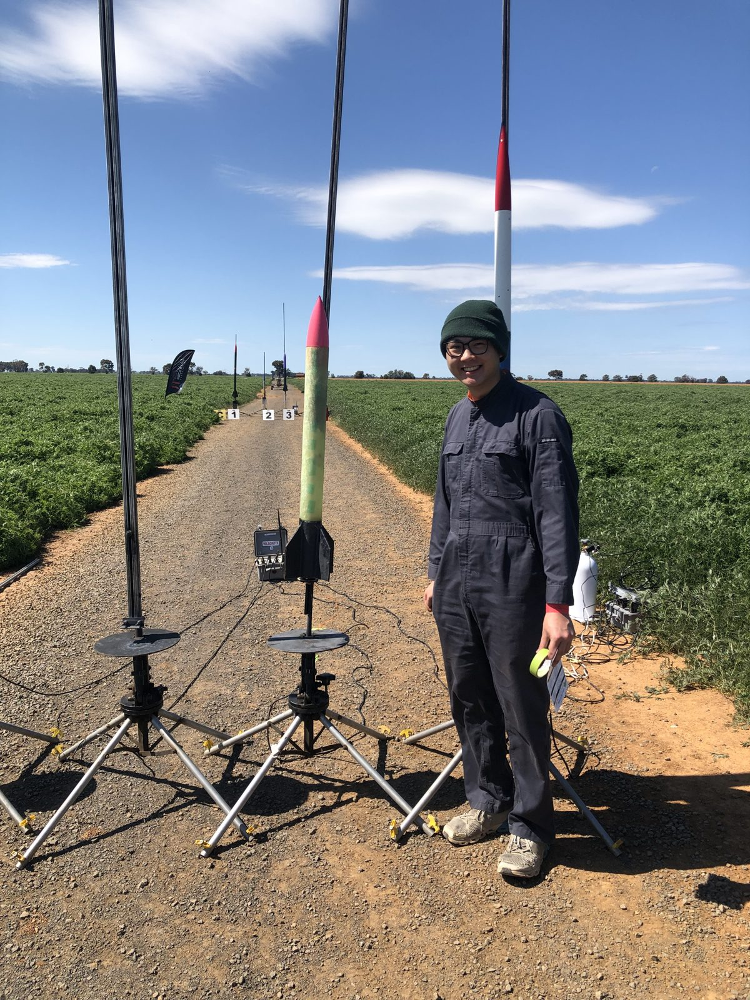
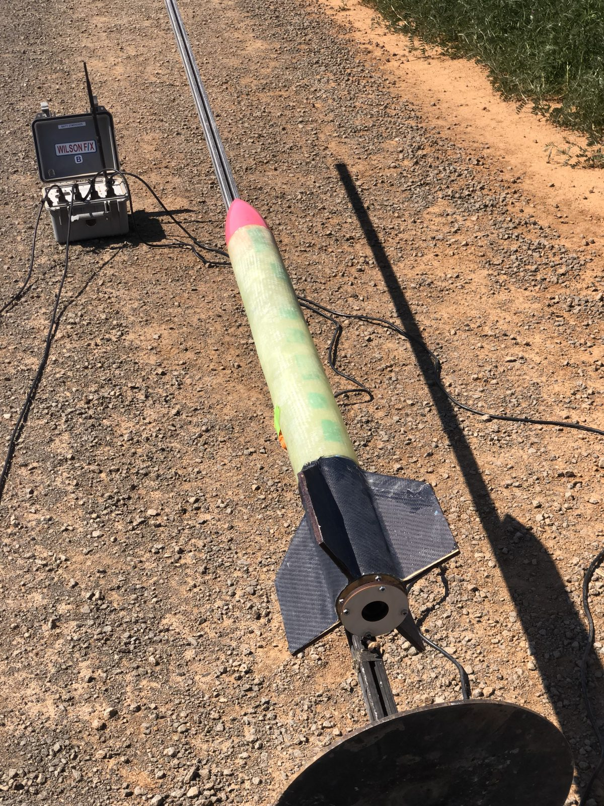
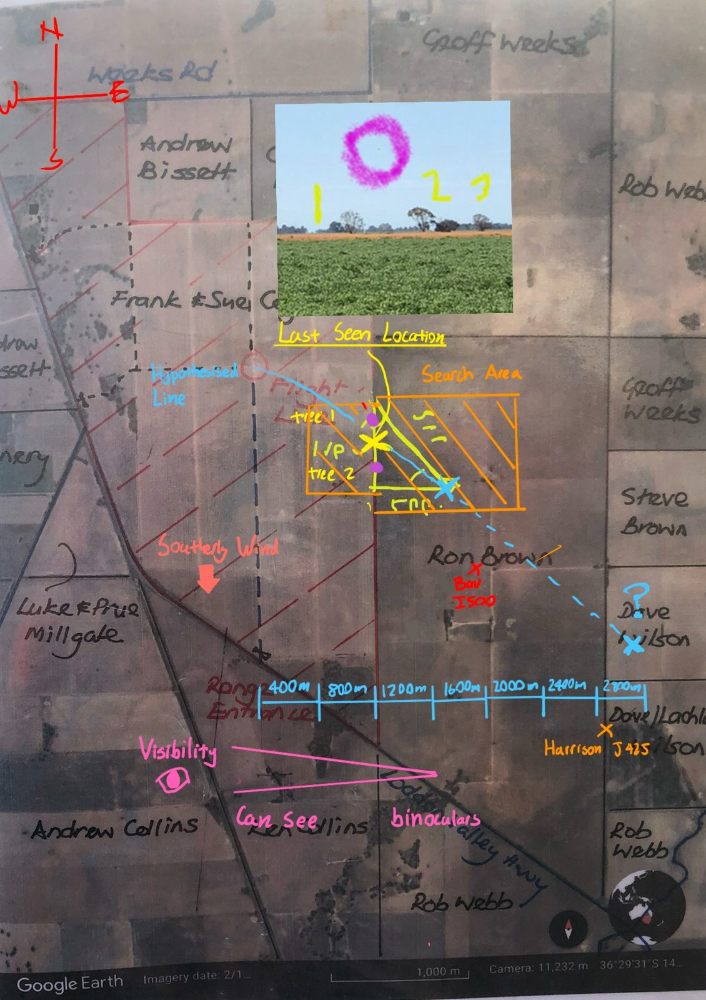

LinkedIn
LinkedIn
Project Meridian | Monash High Powered Rocketry
Launch of Project Meridian, a student-developed 10,000 ft hybrid rocket for AURC 2026. I manufactured the fibreglass tube couplers and carbon-fibre fin wrap, and produced the livery with vinyl cutting.
Launch of Project Meridian, a student-developed 10,000 ft hybrid rocket for AURC 2026. I manufactured the fibreglass tube couplers and carbon-fibre fin wrap, and produced the livery with vinyl cutting.
My scratch-built high-power rocket, designed, simulated and manufactured solo, including a parametric nose cone and custom parachute. It flew to 2,700 ft and was recovered intact.
Launch of my scratch-built L2 rocket on a J250W motor, simulated to a 4,100 ft apogee. The parachute deployed in sight, but tall crops and strong wind meant it was never recovered despite 11 hours of searching.


On the pad before the flight: fibreglass airframe, birch plywood fins with a carbon-fibre fin wrap, and an epoxy-coated PLA nose cone carrying a screamer.

The recovery map I made from the last-seen location, an interpolated flight line and wind drift. Lesson learned: never fly an L2 without a GPS tracker.